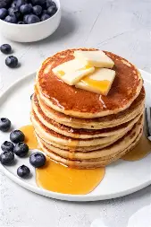

Ingredients
- 1 cup all-purpose flour
- 2 tablespoons sugar
- 1 teaspoon baking powder
- 1/2 teaspoon salt
- 1 cup milk
- 1 egg
- 2 tablespoons melted butter
Instructions
- In a bowl, mix flour, sugar, baking powder, and salt.
- In another bowl, beat egg with milk and melted butter.
- Combine wet and dry ingredients and mix until smooth.
- Heat a skillet and pour in batter to form pancakes.
- Cook until bubbles form, then flip and cook until golden.